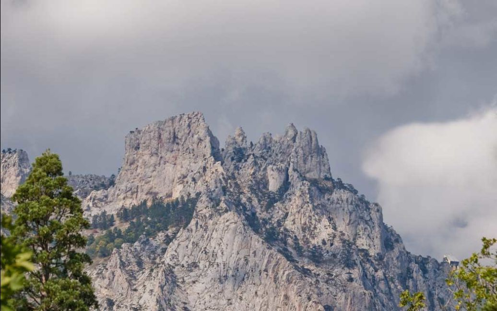
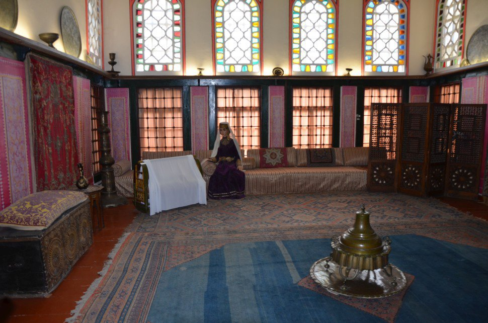
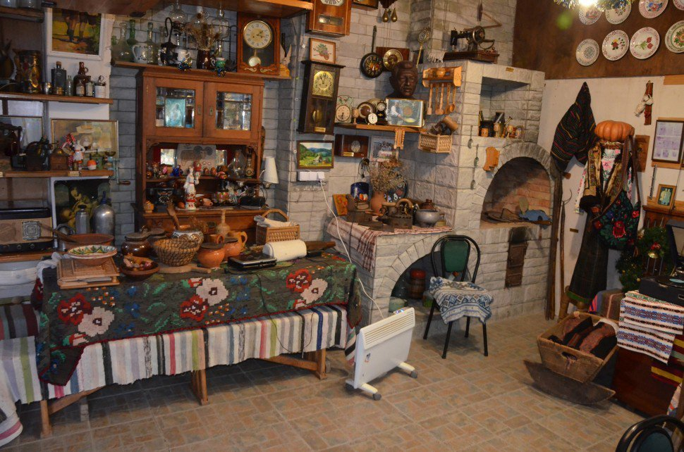

Тур походи в гори і автотури
Хочете піти в похід, або відправитися в автотур? Вибирайте цікавий маршрут і реєструйтеся! З нами часто подорожують новачки, адже головне — це бажання, а ми вже допоможемо втілити ваші мрії в реальність. Залишилося тільки вибрати Маршрут і провести свою найкращу відпустку в подорожі:)
- Похід по гірському Криму «Чатирдаг та Демерджі»
- Похід «Кримська Одиссея»
- Похід по Штангеєвській стежці
- Екскурсії
Багатоденні тури
Похід по гірському Криму «Чатирдаг та Демерджі»
До переліку турівЦей чотириденний похід познайомить вас ближче з унікальною природою Криму. Ви зможете відвідати дві найпопулярніші обладнані печери Криму (Мармурова і Еміне-Баір-Хосар), які на багато сотень метрів пронизують нижнє плато Чатир-Дагу. Крім цього вас чекає підйом на верхнє плато Чатирдагу і п’яту за висотою гору Криму — Еклізі-Бурун. Ви так само підкорите оповиту легендами гору Південна Демерджі, з якої відкривається незабутній вид на морське узбережжя Криму. А попереду вас чекатиме таємнича Долина Привидів та грандіозний Кам’яний хаос.
- Тривалість: 4 дні
- Відстань: ~40 км
- Старт: Сімферополь 11:00
- Фініш: Алушта 13:00, Сімферополь 15:00
- Умови проживання: в наметах
- Рівень складності: початковий/середній
- Маршрут походу: Сімферополь — нижнє плато Чатир-Дагу — печера Еміне-Баір-Хосар — печера Мармурова — верхнє плато Чатир-Дагу — гора Ангара-Бурун (1453 м) — гора Еклізі-Бурун (1527 метрів, радіально) — водоспад Джурла — гора Демерджі (південна, 1239 м ) — Долина Привидів — Кам’яний хаос — фортеця Фуна — Алушта
3400 грн.
Замовити турПохід «Кримська Одиссея»
До переліку турівПохід по Криму, який познайомить з неймовірним плато Карабі, тихим тінистим каньйоном річки Бурульча і дрімучими лісами Криму. Безкраї простори кримських плато, звивисті лісові стежки, карстові печери і ще багато всього цікавого чекає вас в горах Криму.
- Тривалість: 4 дні
- Відстань: ~45 км
- Старт: Сімферополь 11:00
- Фініш: Сімферополь 15:00
- Умови проживання: в наметах
- Рівень складності: початковий/середній
- Маршрут походу: Сімферополь — Червона печера (Кизил-Коба) — Долгоруковская яйла — каньйон річки Бурульча — плато Орта-Сирт — Юкі-Тепе — гора Кара-Тау — плато Карабі — Рибаче
3700 грн.
Замовити турОдноденні походи
Похід по Штангеєвській стежці
До переліку турівШтангеєвська або Мала Штангеєвська стежка вважається першою туристичною стежкою у світі. Названа на честь Ялтинського лікаря та громадського діяча, створена ще за його життя. Має пологий підйом і тому невелику складність.
Штангеєвська стежка (жовтим)
Таракташська(голубим) Ставрікайська стежка(салатовим) Боткінська стежка (червоним)- Тривалість: 1,5 години
- Відстань: 2,6 км
- Рівень складності: початковий/середній
- Цікаве на маршруті:
- водоспад Учан-Су
- чортів міст
- скеля Ставрі-Кая
500 грн.
Замовити турЕкскурсії
До переліку турівБахчисарай
Екскурсії визначними пам'ятками Бахчисараю - це найбільші екскурсії в Криму. Тривають вони цілий день, а з урахуванням дороги займають майже всю добу. Якщо ви відпочиваєте на узбережжі і не хочете витрачати кілька днів, то є сенс придбати квиток на організовану екскурсію - це дозволить вам заощадити час та сили.
Основні екскурсійні маршрути: Ханський палац – музейний комплекс, виконаний у єдиному архітектурному стилі, що є пам'яткою татаро – турецького періоду кримської історії. Свято-Успенський монастир – найбільший печерний монастир Криму. Печерні міста Криму (Чуфут-Кале, Мангуп, Ескі-Кермен) дозволять вам поринути у світ середньовіччя, а печерні монастирі допоможуть торкнутися божественного.
Що подивимось на екскурсії:
Гарем в Ханському палаці
Гарем — у перекладі тюркських мов — «заборонене місце». Гарем був у кожній кримськотатарській сім'ї, незважаючи на те,чи бідна родина була, чи багатою. Гарем – це жіноча частина будинку.
У гаремі ханського палацу, крім ханських дружин, (а хан міг мати чотирьох законних дружин), жили матері, незаміжні сестри та дочки ханів, жіноча прислуга. А ще хлопчики, доки їм не виповниться 7 років. Колись гарем у Ханському палаці налічував 73 кімнати, але згодом багато споруд занепали і були знесені. До наших днів дійшли лише три кімнати із знаменитої «золотої клітки»: Буфетна, Вітальня та Житлова.
Музей побуту Західної України
Приватний музей побуту Західної України розташований поблизу Севастополя у селі Чорноріччя. Цей унікальний, для Криму, заклад заснований дружньою родиною Кузменюків: Михайлом, Валентиною, дочкою Іванною та онуками Михайлом, Олесем, Лізою, Миколою.
У приміщеннях представлені експозиції традиційного буковинського одягу кінця ХIХ — 50-х років ХХ століття: жіночі сорочки, кожухи, киптарі, сардаки, порк'яниці, чоботи, постоли, жіночі черевики, різноманітні чильце, хустки, рушники-перемитки, купча, крисаня(шляпа) та інше. Представлені в музеї та супутні до одягу речі – сумки з домотканого полотна – тайстри, сумки, торби, бесаги, пояси, корали (намиста). Також у музеї представлені ткані та вишиті рушники, скатертини, коци(килими), налавники, залавники, якими користувалися як у повсякденному житті, так і прикрашали свої житла на свята.
1100 грн.
Замовити тур